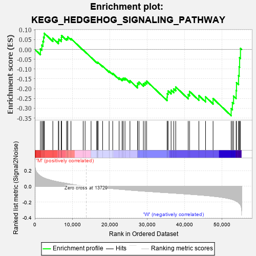
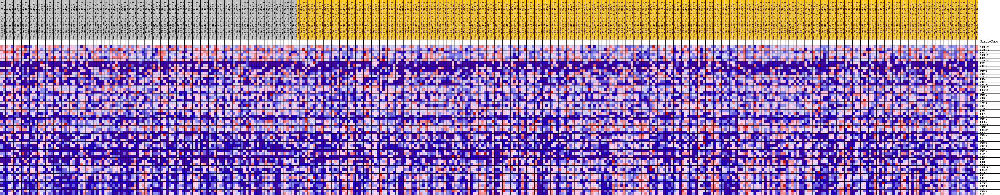
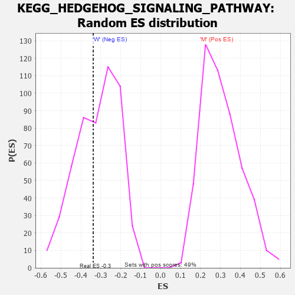

| Dataset | MUC16.MUC16.cls#M_versus_W.MUC16.cls#M_versus_W_repos |
| Phenotype | MUC16.cls#M_versus_W_repos |
| Upregulated in class | W |
| GeneSet | KEGG_HEDGEHOG_SIGNALING_PATHWAY |
| Enrichment Score (ES) | -0.33798727 |
| Normalized Enrichment Score (NES) | -1.0649568 |
| Nominal p-value | 0.40667975 |
| FDR q-value | 1.0 |
| FWER p-Value | 0.995 |

| PROBE | DESCRIPTION (from dataset) | GENE SYMBOL | GENE_TITLE | RANK IN GENE LIST | RANK METRIC SCORE | RUNNING ES | CORE ENRICHMENT | |
|---|---|---|---|---|---|---|---|---|
| 1 | CSNK1G2 | na | 1494 | 0.131 | 0.0021 | No | ||
| 2 | CSNK1G3 | na | 1867 | 0.120 | 0.0219 | No | ||
| 3 | BMP8B | na | 2168 | 0.112 | 0.0414 | No | ||
| 4 | CSNK1G1 | na | 2344 | 0.109 | 0.0623 | No | ||
| 5 | PRKX | na | 2534 | 0.105 | 0.0821 | No | ||
| 6 | CSNK1A1 | na | 4813 | 0.071 | 0.0566 | No | ||
| 7 | LRP2 | na | 6294 | 0.056 | 0.0422 | No | ||
| 8 | WNT11 | na | 6409 | 0.055 | 0.0522 | No | ||
| 9 | ZIC2 | na | 7077 | 0.048 | 0.0508 | No | ||
| 10 | WNT7B | na | 7117 | 0.048 | 0.0608 | No | ||
| 11 | WNT2 | na | 7142 | 0.048 | 0.0709 | No | ||
| 12 | GSK3B | na | 8490 | 0.037 | 0.0547 | No | ||
| 13 | BMP4 | na | 8799 | 0.034 | 0.0568 | No | ||
| 14 | WNT1 | na | 8805 | 0.034 | 0.0643 | No | ||
| 15 | WNT10A | na | 9663 | 0.027 | 0.0549 | No | ||
| 16 | CSNK1E | na | 12927 | 0.005 | -0.0031 | No | ||
| 17 | FBXW11 | na | 13438 | 0.002 | -0.0120 | No | ||
| 18 | IHH | na | 15035 | -0.000 | -0.0409 | No | ||
| 19 | WNT5A | na | 16494 | -0.008 | -0.0656 | No | ||
| 20 | WNT3 | na | 16797 | -0.009 | -0.0690 | No | ||
| 21 | WNT8B | na | 16799 | -0.009 | -0.0669 | No | ||
| 22 | STK36 | na | 16905 | -0.010 | -0.0666 | No | ||
| 23 | WNT4 | na | 18134 | -0.016 | -0.0852 | No | ||
| 24 | CSNK1D | na | 19862 | -0.024 | -0.1111 | No | ||
| 25 | BTRC | na | 20825 | -0.029 | -0.1221 | No | ||
| 26 | BMP2 | na | 22534 | -0.036 | -0.1450 | No | ||
| 27 | WNT16 | na | 23337 | -0.040 | -0.1508 | No | ||
| 28 | WNT3A | na | 23617 | -0.041 | -0.1468 | No | ||
| 29 | BMP8A | na | 24104 | -0.043 | -0.1462 | No | ||
| 30 | PRKACB | na | 25430 | -0.048 | -0.1596 | No | ||
| 31 | SUFU | na | 27452 | -0.055 | -0.1840 | No | ||
| 32 | PRKACA | na | 27466 | -0.055 | -0.1720 | No | ||
| 33 | BMP5 | na | 27851 | -0.057 | -0.1664 | No | ||
| 34 | WNT9A | na | 29025 | -0.061 | -0.1741 | No | ||
| 35 | GAS1 | na | 29479 | -0.062 | -0.1685 | No | ||
| 36 | SHH | na | 29892 | -0.064 | -0.1619 | No | ||
| 37 | WNT5B | na | 35369 | -0.081 | -0.2432 | No | ||
| 38 | WNT10B | na | 35414 | -0.081 | -0.2261 | No | ||
| 39 | WNT6 | na | 35632 | -0.082 | -0.2119 | No | ||
| 40 | WNT7A | na | 36430 | -0.084 | -0.2078 | No | ||
| 41 | GLI2 | na | 37143 | -0.086 | -0.2016 | No | ||
| 42 | WNT8A | na | 37669 | -0.088 | -0.1916 | No | ||
| 43 | BMP7 | na | 40995 | -0.099 | -0.2299 | No | ||
| 44 | HHIP | na | 41364 | -0.100 | -0.2143 | No | ||
| 45 | BMP6 | na | 43857 | -0.109 | -0.2353 | No | ||
| 46 | CSNK1A1L | na | 45639 | -0.116 | -0.2419 | No | ||
| 47 | PRKACG | na | 47650 | -0.126 | -0.2504 | No | ||
| 48 | PTCH1 | na | 52486 | -0.163 | -0.3020 | Yes | ||
| 49 | DHH | na | 52810 | -0.167 | -0.2708 | Yes | ||
| 50 | SMO | na | 53127 | -0.172 | -0.2384 | Yes | ||
| 51 | RAB23 | na | 53822 | -0.187 | -0.2096 | Yes | ||
| 52 | PTCH2 | na | 53909 | -0.189 | -0.1692 | Yes | ||
| 53 | WNT2B | na | 54454 | -0.206 | -0.1335 | Yes | ||
| 54 | GLI3 | na | 54624 | -0.214 | -0.0891 | Yes | ||
| 55 | WNT9B | na | 54741 | -0.220 | -0.0425 | Yes | ||
| 56 | GLI1 | na | 54972 | -0.235 | 0.0053 | Yes |

